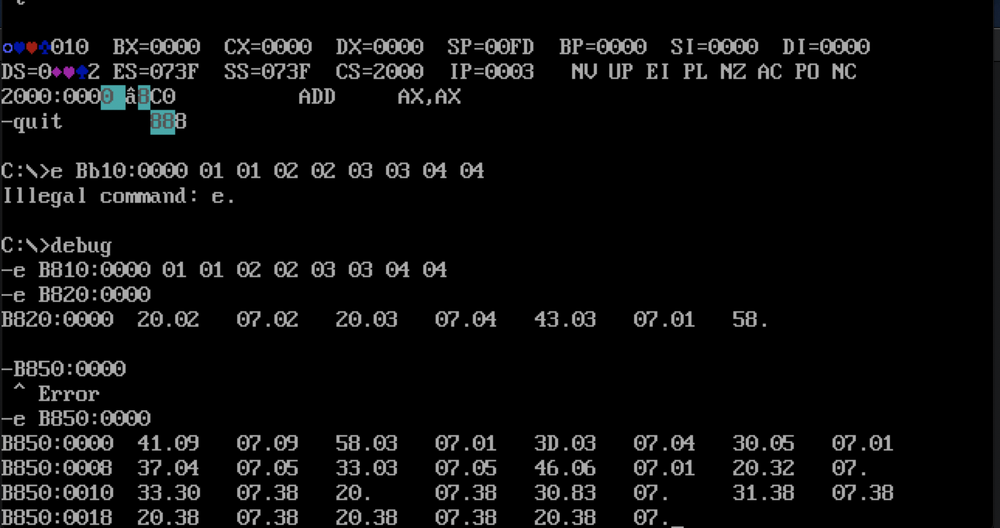

第一部分:硬件模型
Abstract
硬件基础
全书的核心在使用汇编语言进行编程，老师在第一章就抽象出了完整的编程模型供汇编程序员参考————
冯诺依曼结构。
CPU只是一个运算单元，只有提供了数据和指令才可以正常运行，而数据和指令存储在内存中。那CPU和内存如何进行交互？
- 存储单元的地址（地址）
- 读/写操作（控制）
- 读/写的具体数据（数据）
答案是总线，地址总线决定了CPU的寻址能力；数据总线决定了CPU一次能够处理多少数据；控制总线决定了CPU对外部器件的控制能力。这里的外部器件指的是除内存外的其他存储单元比如VGA等。所以在模型内部实际上还有一层抽象————那就是由系统中所有的存储单元组成的统一的逻辑存储器。实际上CPU面向的就是这个逻辑存储器，书中叫它
内存地址空间。
以上就是整个书中抽象出来最简单的编程模型，王爽老师在一开始就定下这本书的基调————不是讲CPU和外设的物理结构
《微机原理和接口》，也不是讲整个计算机系统的结构和功能《组成原理》。学习汇编语言是利用固有的硬件体系和特有的指令集进行编程从而对硬件系统进行控制。 固有的硬件体系指的是这套CPU+RAM的计算机模型是图灵，冯诺依曼这些先驱们总结出来的一套最适合的结构。而特有的指令集则是说不同的CPU有不同的汇编语言，用x86的汇编语言的原因主要是因为这套指令集只有14个寄存器和1MB(20位地址总线)寻址空间，比较容易掌握。
指令和数据
学习组成的时候就对这两个概念很模糊，但是做实验的过程中其实发现：其实CPU看到的东西就是一堆01而已，真正将这堆01赋予意义的还是我们。换句话说就是数据和指令只是一个应用上的概念，你将它放到PC中它就是地址，而将它放到另外一个寄存器中它可能就直接被用来运算了。 从原理上看，主要是不同的寄存器对这些数据赋予了不同的功能。CPU的工作用一句话来概括就是
从特定的寄存器中取出data1作为地址，然后把内存中这个地址相对应的data2作为指令进行计算。但是如果我把data1和data2互换一下，其实也是可以的。但是需要考虑到的是data2所代表的地址是不是在内存地址空间的范围之内，我的理解是寄存器，总线，内存中存储数据的位数有可能都是不一样的。但是说到底它们只是来存储数据的，写错最坏的情况也就是CPU跑崩了。
寄存器
8086CPU有14个寄存器，都是16位的。但是这16位的寄存器也可以独立作为两个8位的寄存器使用。
寄存器和内存是汇编程序猿眼中最直观的计算机样子。 ##### 汇编层面的CPU * 运算器进行信息处理 * 寄存器进行信息存储 * 控制器控制各种器件进行工作 * 内部总线连接各种器件，在它们之间进行数据的传送
8086架构（16位机）
具体深究到物理实现就是《组成原理》知识了。
* 运算器一次最多可以处理16位数据
* 寄存器的最大宽度为16位
* 寄存器和运算器之间的通路为16位
汇编层面的内存
CPU在访问内存单元的时候，需要知道内存单元的地址。所有的内存单元构成的存储空间是一个一维的线性空间，每一个内存空间在这个空间上都有唯一的地址，这个惟一的地址就叫做
物理地址。
CPU首先在内部形成这个物理地址，然后通过地址总线送入存储器。这个地址一定是一个内存单元的物理地址。不同的CPU架构形成地址的方式不一样。
CS:IP
前面提到了8086CPU内部需要形成物理地址，但是8086是16位机————只能处理和传输16位的地址，但是8086的地址总线有20位，所以需要两个16位来共同形成一个20位的地址。 14个寄存器中，CS是段寄存器，存放基地址。而IP存放偏移量。公式:
CSx16+IP。
首先需要明白的就是，一个内存单元是8位二进制也叫一个字节。而十六进制的一位可以表示成为二进制的4位。完全只是为了方便才写成16进制的。20位的地址（5位16进制）可以写成4C780H，后面的H表示16进制。一个X进制的数据左移一位，相当于乘以X。所以为了记起来方便一些可以记成CS寄存器的数据左移一位+IP寄存器的值。但是两个寄存器只有16位（4位16进制)，到后面计算的时候需要注意这两个前提，避免溢出。 书中特别强调了对段的理解。这里的段并不是指内存被物理上分成一段一段的。而是因为CPU在管理内存的时候，使用CSx16+IP的方式来进行管理。所以可以将地址连续，起始地址为16的倍数的一组内存单元看成是一个段。重点在于不是所有的起始地址都可以作为段地址————这是因为CSx16决定的。而且因为IP是16位的所以每一个段的长度最大为64KB。
执行过程
在8086机中，任意时刻CPU将CS:IP指向的内容当做指令执行。汇编中使用
jmp 段地址:偏移地址对CS:IP进行修改。或者使用jmp 寄存器来修改IP的值。
###### 8086的工作过程 * 从CS:IP指向的内存单元中读取指令，读取的指令进入指令缓存器。 * IP指向下一条指令。 * 执行指令,从CS:IP中取指令，重复上面的过程。
书中划线
- 汇编语言和机器语言的差别在于指令的表示方法上。
- 微机存储器的容量是以字节为最小单位的来计算的。
- 在内存和磁盘上，数据和指令没有任何区别。
- 在汇编语言这门课中，我们所面对的是内存地址空间。CPU向这段地址中读写数据实际上就是向相应的物理存储器中读写数据。
- 内存地址空间的大小受到CPU地址总线宽度的限制。
实验1 查看CPU和内存，用机器指令和汇编指令编程
工具介绍
debug是DOS,Windows都提供的实模式（8086方式）程序的调试工具。下面是本次实验将会用到的参数:
##### r (读写寄存器) *r查看所有的寄存器的值 *r 寄存器名称修改制定寄存器的值
d （读写内存）
d 段地址:偏移地址列出从指定内存单元开始的128个内存单元的内容d 段地址:起始偏移地址 结尾偏移地址列出在偏移地址范围之内的内存单元的内容
e （读写内存）
e 段地址:偏移地址 data1 data2 data3……从特定单元开始讲数据写入内存e 段地址:偏移地址 回车表示挨个儿修改内存，空格表示默认不修改，回车表示修改结束
e+u+t
- 使用
e参数向内存中写入机器码 - 使用
u 段地址:偏移地址可以将内存中机器码翻译成为汇编语言 t参数执行CS:IP指向的内存地址单元的任何指令，注意修改参数
a
a 段地址:偏移地址可以直接使用汇编的格式写入机器指令
实验任务
一共有4个实验。写出来的都是我觉得很有意思且值得讨论的实验。
第二个实验
给出起始地址为
2000:0000的三条指令，使用这三条指令计算2的8次方。
<img src="2.png" width="50%" height="50%" alt="">有意思的是这个算法，a += a；如果这里的a是2的话，实际上
a+a等于ax2所以可以2的8次方可以通过8次这样的加法完成，但是如果a是其他的值就不行了。
最后两个实验
使用
e参数对特定的内存单元进行读写。 
这两个实验间接地证明了内存地址空间的存在。
我在向内存B810:0000中写数据的时候，发现显示器上会出现有颜色的字符和表情包，猜想这个地址应该是显存的物理地址。这也说明这里的内存不仅仅指的是主存储器，还有其他的和CPU直接相连的RAM。